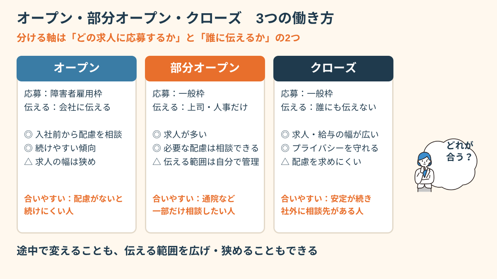
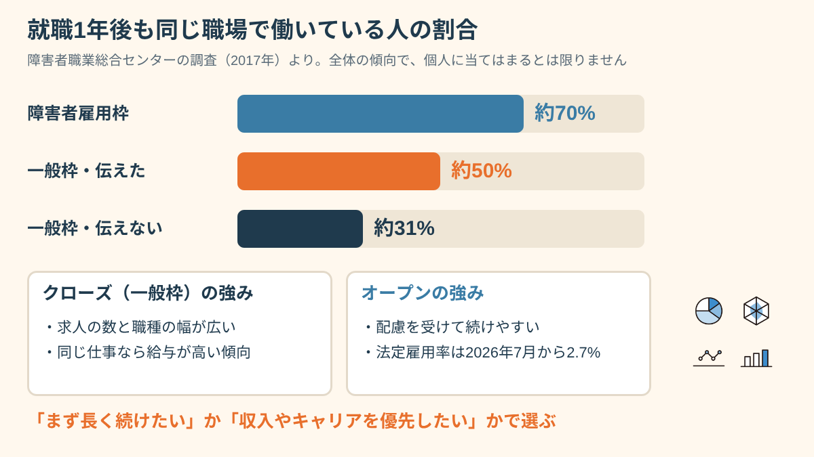
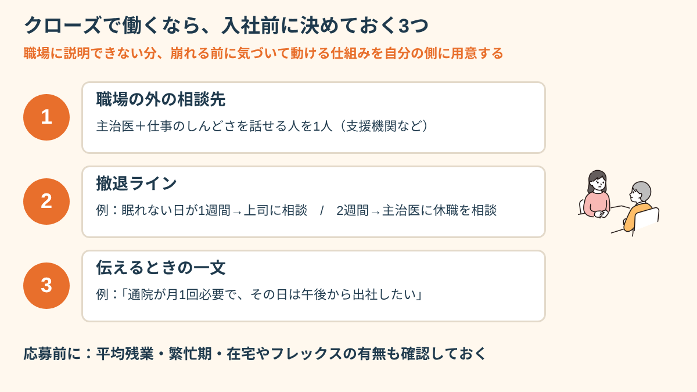
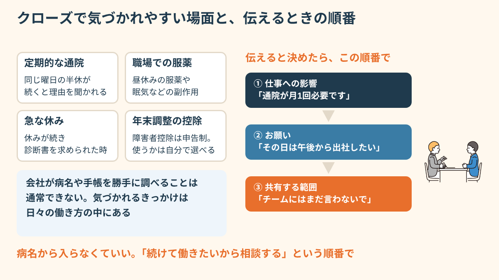
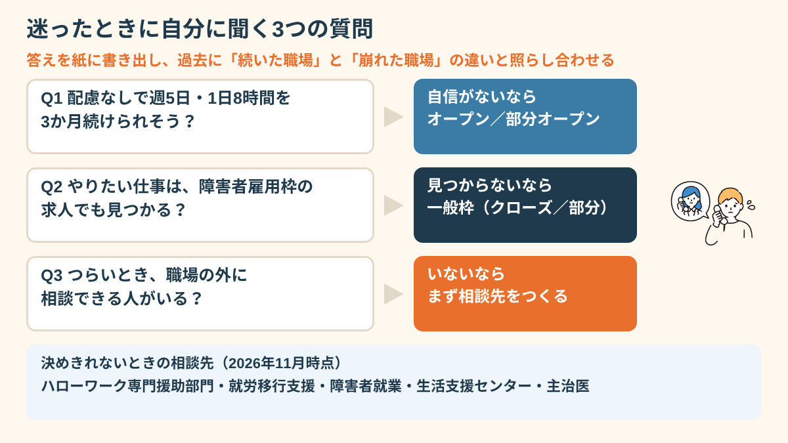

最初にお伝えしたいのは、オープンかクローズかに「正解」はなく、今の自分の体調・働き方・優先したいことに合うほうを選べばいいということです。そして、その選択は途中で変えることも、一部の人にだけ伝えることもできます。この記事では、2つの働き方の違いを求人・給与・定着率の数字で比べたうえで、それぞれが合いやすい人、クローズで働くと気づかれやすい場面、伝えると決めたときの言い方、迷ったときの判断手順と相談先まで、就労支援の現場で実際に一緒に整理している順番でまとめます。
オープン就労・クローズ就労とは。実は「3つ目」もある
オープン就労は、障害があることを会社に伝えたうえで働く形です。多くは障害者雇用枠の求人に応募し、障害者手帳を持っていることが前提になります。入社前から「どんな配慮があれば働けるか」を話し合えるのが特徴です。
クローズ就労（クローズド就労とも言います）は、障害を伝えずに一般の求人に応募して働く形です。手帳を持っていても、使うかどうかは本人が決めてよく、伝えないこと自体は違法でも不誠実でもありません。
ただ、実際の相談では、この2つのどちらかにきれいに分かれる人はむしろ少数です。よくあるのが一般求人に応募して、障害のことは伝えるという形。たとえば「一般枠で入社したけれど、通院があるので直属の上司と人事にだけ話してある」「面接では言わず、入社3か月後に上司に伝えた」といったケースです。この記事では、これを「部分オープン」と呼び、オープン・クローズに並ぶ3つ目の選択肢として扱います。
3つを分けるのは、「どの求人に応募するか（障害者雇用枠か一般枠か）」と「誰に、どこまで伝えるか」の2つの軸です。この2つを分けて考えると、「障害者雇用枠は求人が少ないから、一般枠でいく。でも配慮は欲しいから上司にだけ伝える」のように、自分に合う組み合わせが見えてきます。
なお、障害者手帳がない方でも、診断があれば一般枠で会社に伝えて配慮を相談することはできます。「手帳がないからクローズしかない」と思い込んでいる方もいますが、選べる幅はもう少し広いことを覚えておいてください。

数字で比べる。求人数・給与・続きやすさ（2026年11月時点）
迷いを「気持ち」だけで考えていると堂々巡りになりやすいので、まずは公的な調査の数字で、2つの働き方の違いをざっくり押さえておきましょう。数字はあくまで全体の平均や傾向で、あなた個人に当てはまるとは限りません。
求人の数と仕事の幅
求人の数は、一般枠のほうが圧倒的に多いのが現状です。障害者雇用枠の求人は増えてきてはいるものの、事務・軽作業・清掃などに偏りやすく、専門職や管理職の募集は限られます。一方で、民間企業の法定雇用率は2024年4月に2.5%、2026年7月からは2.7%へと段階的に引き上げられており、障害者雇用枠の求人や職種は広がりつつあります。
給与の目安
厚生労働省の「令和5年度障害者雇用実態調査」では、障害者雇用で働く人の平均賃金（月額）は、身体障害の方で約23万5千円、精神障害の方で約14万9千円、発達障害の方で約13万円、知的障害の方で約13万7千円でした。短時間勤務の人も含めた平均なので低めに出ますが、同じ仕事内容なら一般枠のほうが給与が高い傾向はあります。
続きやすさ（定着率）
一方、続きやすさでは逆の傾向が出ています。障害者職業総合センターの調査（2017年）では、就職から1年後に同じ職場で働き続けている人の割合は、障害者雇用枠で約70%、一般枠で障害を伝えた人で約50%、一般枠で伝えなかった人で約31%でした。調査時期は少し前ですが、「伝えて配慮を受けられるかどうか」が続けやすさに大きく関わることがうかがえます。
つまり、クローズは「入口の広さと給与」、オープンは「続けやすさ」に強みがあるという、トレードオフの関係です。どちらを取るかは、今のあなたが「まず長く続けたい」のか「キャリアや収入を優先したい」のかで変わります。

オープン就労が合いやすい人と、よくある不安
オープン就労が選択肢として有力になりやすいのは、次のような方です。
- 配慮がないと続けるのが難しい：通院で月に1〜2回は休みが必要、疲れやすく残業が難しい、口頭の指示だけだと抜けが出る、など。
- 体調に波があり、急な休みが出ることがある：理由を説明できる状態のほうが、休んだ後に戻りやすくなります。
- 過去に「隠して無理をして」崩れた経験がある：同じ形を繰り返さないための選択として選ぶ方が多いです。
- まずは長く続けて、働く自信を取り戻したい：ブランクがある、短期離職が続いた、といった方。
一方で、オープンにはよくある不安もあります。代表的なのは「給料が低いのでは」「簡単な仕事しか任されないのでは」「職場で特別扱いされて浮くのでは」の3つです。
給料と仕事内容については、会社と職種によって差が大きいのが実際です。障害者雇用枠でも、経験に応じて一般社員と同じ給与テーブルで働ける会社や、正社員登用の制度がある会社もあります。求人票の「雇用形態」「昇給・登用実績」「業務内容の具体例」を確認し、面接で「入社後に業務の幅を広げていくことはできますか」と聞いてみると、その会社の姿勢が見えてきます。特例子会社という選択肢もあり、詳しくは特例子会社の記事でまとめています。
「浮くのでは」という不安には、伝える範囲を自分で決められることが助けになります。障害者雇用枠でも、同僚にどこまで共有するかは本人と相談して決めるのが一般的です。「チームには『通院で月1回休む』とだけ伝えてほしい」とお願いすることもできます。
「クローズで2年働いたけど、調子が崩れたとき誰にも言えなくて、ぎりぎりまで抱えて休職になりました。次はオープンにして、最初に『朝の通院がある日は10時出社』と決めてもらった。それだけで、月曜の朝の憂うつがずいぶん減りました。」
クローズ就労が合いやすい人と、続けるための備え
クローズ就労が現実的な選択肢になりやすいのは、次のような方です。
- 症状が安定していて、配慮がなくても業務をこなせる期間が続いている：目安として、半年以上大きな波がない、など。
- 希望する職種やキャリアが、障害者雇用枠の求人ではほとんど見つからない：専門職、営業、企画など。
- プライバシーを守りたい気持ちが強い：伝えること自体が大きなストレスになる方。
- 手帳を持っていない、または取得するかどうか迷っている：一般枠が前提になります。
ただし、クローズで長く続けている方には共通点があります。それは、「職場の外に、相談できる場所と自分のルールを持っている」ことです。クローズでは職場に事情を説明できない分、崩れる前に気づいて手を打つ仕組みを、自分の側で用意しておく必要があります。
具体的には、次の3つを入社前に決めておく方が多いです。1つ目は職場の外の相談先。主治医に加えて、就労移行支援の卒業生ならその事業所、障害者就業・生活支援センター、カウンセラーなど、「仕事のしんどさ」を話せる人を1人は確保しておきます。2つ目は撤退ライン。「眠れない日が1週間続いたら上司に相談する」「2週間続いたら主治医に休職を相談する」など、限界の手前で動くための目安です。3つ目は伝えるときの一文。いざというときにゼロから考えなくて済むよう、短い言い方を用意しておきます（次の章で例を紹介します）。
残業や急な予定変更が多い職場は、クローズでは体調を守りにくくなります。応募の段階で、平均残業時間や繁忙期、在宅勤務やフレックスの有無を確認しておくことも、立派な「備え」です。

クローズは「ばれる」？気づかれやすい場面と、伝えると決めたときの言い方
クローズを考える方から、いちばん多く聞かれるのが「黙っていて、ばれることはありますか」という質問です。結論から言うと、会社があなたの病名や手帳の情報を勝手に調べることは、通常はできません。ただ、日々の働き方の中で「何かあるのかな」と気づかれやすい場面はあります。
気づかれやすい4つの場面
- 定期的な通院：毎月同じ曜日に半休や遅刻が続くと、理由を聞かれることがあります。
- 職場での服薬：昼休みに薬を飲む姿や、眠気・ふらつきなどの副作用。
- 体調の波による急な休み：特に、休みが続いて診断書を求められたとき。
- 年末調整での障害者控除：控除を受けるには申告書に記入するため、担当部署には伝わります。控除を使うかどうかは本人が選べます。
「ばれたらクビになるのでは」と心配する方もいますが、障害を伝えていなかったこと自体を理由に不利益な扱いをすることは、障害者雇用促進法の考え方に照らして問題になりえます。とはいえ、面接で業務に関わる健康状態を直接聞かれて事実と違う答えをした場合などは、事情によってトラブルになることもあります。個別の状況は、労働局やハローワークの専門窓口に相談してください。
伝えると決めたときの言い方
クローズで入社したあと、「やっぱり伝えたい」と思うのは珍しいことではありません。そのときのコツは、病名から入らず、「仕事への影響」と「こうしてもらえると助かること」をセットで伝えることです。たとえば次のような言い方です。
伝える相手は、最初は直属の上司か人事のどちらか1人に絞るのがおすすめです。「誰にまで共有してよいか」も、その場で自分から伝えましょう。会社が障害を知ったあとは、合理的配慮（通院への配慮、業務量の調整など）について話し合う対象になります。面接での伝え方は、面接での障害の伝え方の記事も参考にしてください。

途中で変える・一部の人にだけ伝える、という選び方
オープンかクローズかの選択は、一度決めたら変えられないものではありません。相談の現場でよく見るのは、次のような変化です。
ひとつは、クローズで入社して、あとから伝えるパターン。入社して半年ほど働き、職場の雰囲気や上司の人柄が分かってから「この人なら」と伝える方は多いです。最初から伝えるより、仕事ぶりを見てもらったうえで話せるので、受け止めてもらいやすいという声もあります。
もうひとつは、転職のタイミングで切り替えるパターン。クローズで続けることに疲れて、次はオープンにする方もいれば、障害者雇用枠で数年働いて体調が安定し、キャリアを広げるために一般枠に挑戦する方もいます。どちらも「後退」ではなく、そのときの自分に合わせた調整です。
そして、伝える範囲は「全員に言う／誰にも言わない」の二択ではなく、グラデーションで決められます。たとえば、次のような段階があります。
- 誰にも伝えない（社外の相談先だけ持つ）
- 人事だけに伝える（手続きや制度のため）
- 直属の上司にだけ伝える（日々の業務の調整のため）
- 上司と、一緒に働く数人に伝える
- チーム全体に、必要なことだけ伝える
どの段階を選んでもかまいませんし、状況が変われば段階を上げ下げしてもいいのです。大事なのは、「何のために、誰に伝えるのか」を自分で決めておくこと。「通院の日の調整がしたいから上司に」「健康診断や制度の手続きのために人事に」と目的がはっきりしていると、伝える範囲も自然に決まります。
「全員に言うか、誰にも言わないか、の2つしかないと思い込んでいました。支援員さんに『上司にだけ、通院のことだけ伝える』という方法もあると言われて、一気に気が楽になった。今は一般枠で働きながら、上司だけが事情を知っています。」
迷ったときの判断手順と相談先（2026年11月時点）
オープンかクローズかを一人で決めようとすると、「言ったら落ちるかも」「言わなかったら倒れるかも」と、不安と不安の間を行ったり来たりしがちです。そんなときは、次の3つの質問に順番に答えてみてください。
自分に聞く3つの質問
- 質問1：配慮がなくても、週5日・1日8時間を3か月続けられそうか？ 自信がないなら、オープンか部分オープンが候補です。
- 質問2：やりたい仕事は、障害者雇用枠の求人でも見つかるか？ ほとんど見つからないなら、一般枠（クローズか部分オープン）が候補になります。
- 質問3：つらくなったとき、職場の外に相談できる人がいるか？ いないなら、クローズの前にまず相談先をつくることが先です。
この3つの答えを紙に書き出し、過去の職場で「続いたとき」と「崩れたとき」の違いと照らし合わせると、自分に合う形が見えてきやすくなります。それでも決めきれないときは、無理に一人で決めず、次のような窓口を頼ってください。
- ハローワークの専門援助部門：障害者雇用枠の求人紹介や、開示の相談ができます。手帳がなくても相談できる場合があります。
- 就労移行支援事業所：オープン・クローズの判断も含めて、就職の準備を一緒に進められます。原則として利用期間は2年です。
- 障害者就業・生活支援センター：就職前から就職後まで、仕事と生活の両面の相談ができます。
- 主治医：「今の体調で、配慮なしでどこまで働けそうか」の見立てを聞いておくと、判断の材料になります。
どの窓口も、利用の条件や内容は地域や時期によって変わることがあります。最新の情報は各窓口に確認してください。就職後に職場で困ったときは、就労定着支援という制度も使えます。働き方の軸そのものに迷っている方は、転職の軸の決め方の記事もあわせてどうぞ。
